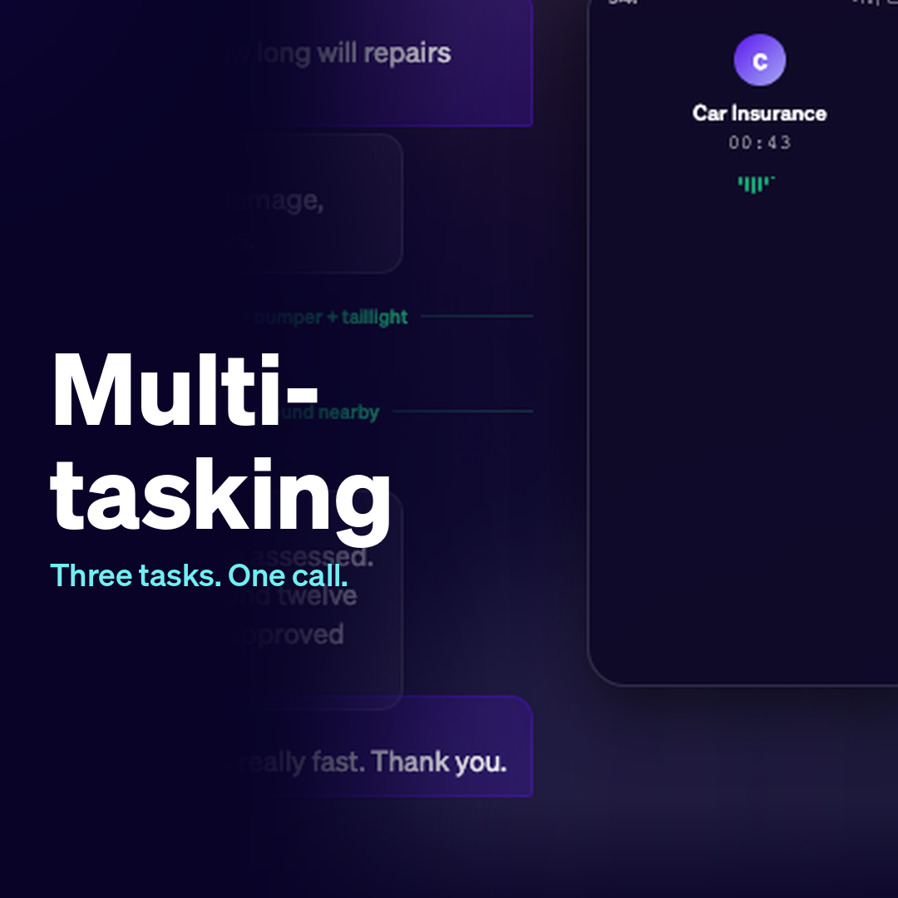
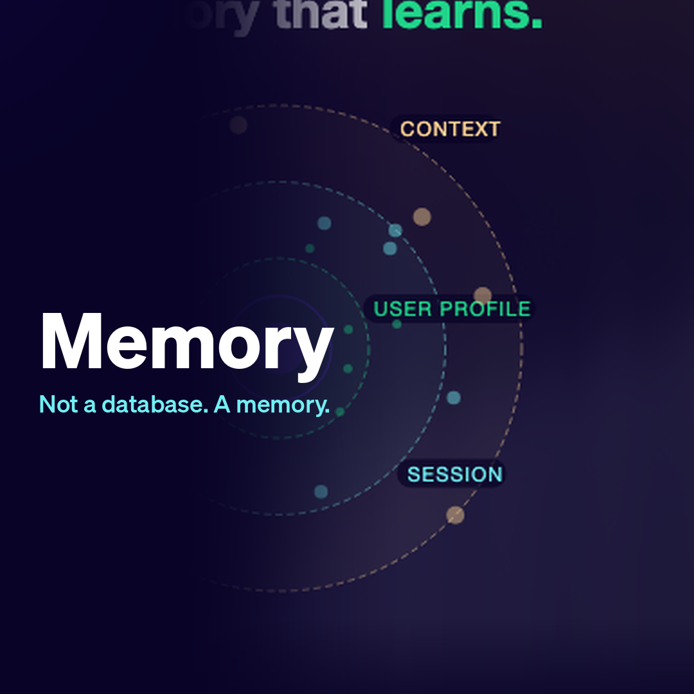
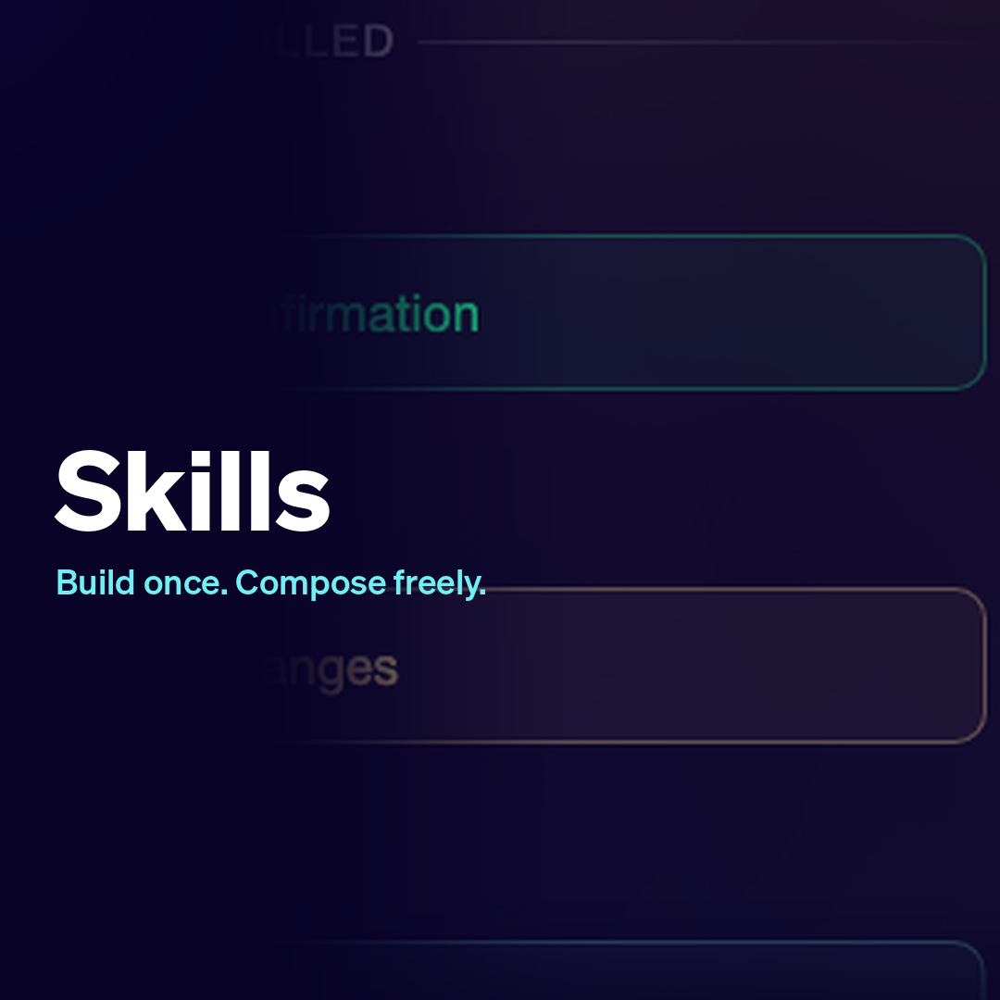
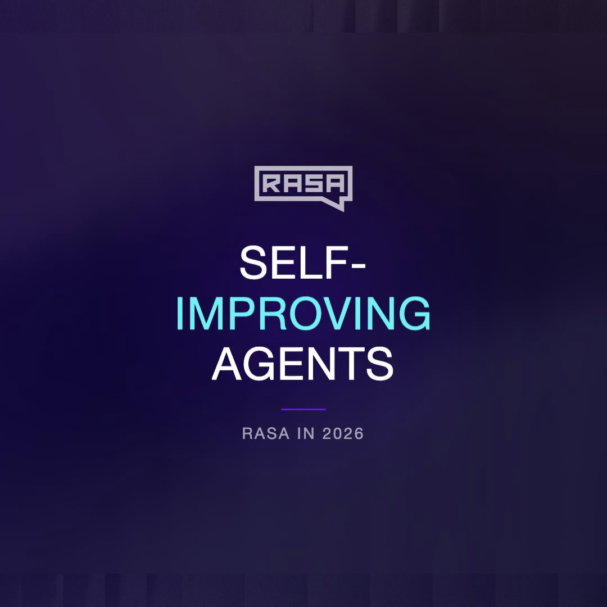

Filing a claim, arranging a courtesy car, answering questions — all at once.
Watch an agent handle a full insurance claim. While the customer uploads photos, the agent arranges a rental and answers follow-up questions in parallel.
The elements of a modern agent architecture, explained in 1 minute each.
Have a question? Book a call with Alan
Watch an agent handle a full insurance claim. While the customer uploads photos, the agent arranges a rental and answers follow-up questions in parallel.

Not a database — a memory. It learns what matters across skills, channels, and conversations without being told what to look for. When a customer comes back on a different channel, the conversation picks up where it left off.

Rasa skills sit on a spectrum from fully controlled to fully autonomous. Build once, compose freely, test in isolation.

Every conversation your agent handles is signal. Rasa gives your coding agent the context to diagnose what went wrong, write the fix, and test it — before a real user ever sees it.
Vote for the next topic, book a call with Alan, or follow along.